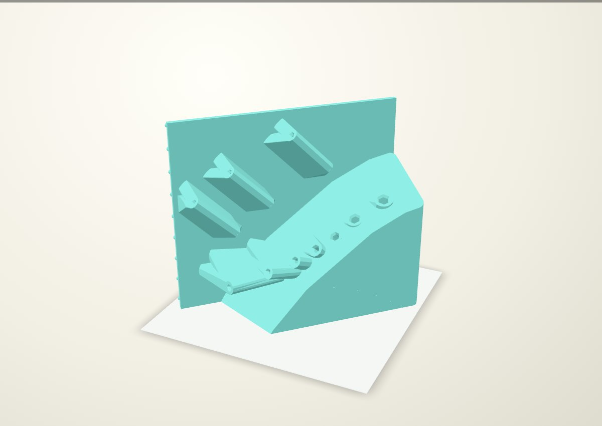

Green fan: gravity seating and broad fin roots
The selected Bondhus 13190 inch fan, with 50% longer straight sleeves and T-bars twisted 30° toward the pegboard plane. Every key points at least 10° upward from its seated tip toward its handle. The lowest green key is set to 10.5°. Enlarged tapered fin roots brace the sleeves in the print-bed plane.

Gravity draws each key toward its blind floor. The shafts fan across the board and splay 11.5–21.1° out of its plane, preserving the tucked tips and pinch access. The 3/8-inch shaft rises from 9.69° to 10.5°, with its handle and hex clocking rotated together. The other key angles already exceed 10°. The T-bars retain their flatter orientation toward the board.
Front and plan views


Longer straight engagement

Straight engagement increases from 40–76.2 mm to 60–114.3 mm. Each entrance retains the 3 mm axial lead-in opening 1.5 mm per flat, +0.38 mm total AF clearance, square stop and 1 mm vent. The C fit was physically selected only on the owner's 3 mm / 5 mm coupons; these inch sizes and longer guides need physical confirmation.
| Key | Previous | New | Upward tilt |
|---|---|---|---|
| 3/32 | 40.0 | 60.0 | 43.3° |
| 7/64 | 40.0 | 60.0 | 43.3° |
| 1/8 | 40.0 | 60.0 | 43.3° |
| 9/64 | 40.0 | 60.0 | 69.8° |
| 5/32 | 40.0 | 60.0 | 63.1° |
| 3/16 | 40.0 | 60.0 | 54.5° |
| 7/32 | 44.4 | 66.7 | 44.4° |
| 1/4 | 50.8 | 76.2 | 34.0° |
| 5/16 | 63.5 | 95.2 | 23.1° |
| 3/8 | 76.2 | 114.3 | 10.5° |
Filled bending planes and tip-face print pose
A solid wedge joins the sleeves to the backplate and tip-end base. Each fin now has a tapered root widened 12 mm per side in print XY (installed YZ), extending 16 mm toward the print bed. The broad roots merge into the backplate and filled base. Full lead-in openings are reserved through the extra material. The base retains 8 mm corner rounds, and the fin roots use broad tapered connections to the backplate. CAD solid volume is 1.972 litres; actual filament depends on the slice.

The flat tip face provides 168.6 cm² of native bed contact. At 45° on the bed, the nominal print envelope is 242.8 × 213.2 × 216.0 mm. Vents remain 1 mm, routed forward perpendicular to each shaft through the added stock. Native probes confirm every vent and entrance is open; the board-side peg geometry is unchanged.
This revision has not been sliced. The preceding filled-base revision estimated 57 h 32 min and 991 g ASA in the owner’s P1S/Orca profile. Its support screen found 35 moves inside the 9/64-inch socket. Those figures belong to the previous geometry. A new slice with socket support blockers and a support/contact review is required before printing.
Size and stack
The native holder is 216.0 × 97.7 × 252.9 mm (width × depth × height, including rear pegs and excluding tools). The selected previous green holder was 184.0 × 91.3 × 239.2 mm.
Only the green inch rack changes. The blue metric and orange Torx holders retain their geometry. The revised stack uses 254.0 mm (10 rows) from inch to metric, then 228.6 mm (9 rows) to Torx.

Checks and limits
All 26 stored-tool and axial socket-release checks pass for this stack. The green rack is checked for a two-finger pinch at the front end of each handle: two assumed 24 × 18 × 10 mm fingertip pads, spanning 38 mm across the 18 mm grip. All ten pinch approaches and axial-release sweeps clear the neighboring tools and native holders. Native bodies are valid single solids; stored tool/body overlap is zero. The green socket cavities remain separate.
Tools are catalogue envelopes with an assumed 18 mm grip diameter. Subsequent free-hand removal, whole-rack installation, physical printing, support removal and loads remain unqualified. The previous Orca archive also emitted placeable-area diagnostics during organic-support generation; it is retained as historical evidence only. These are review renders, not qualified print files.